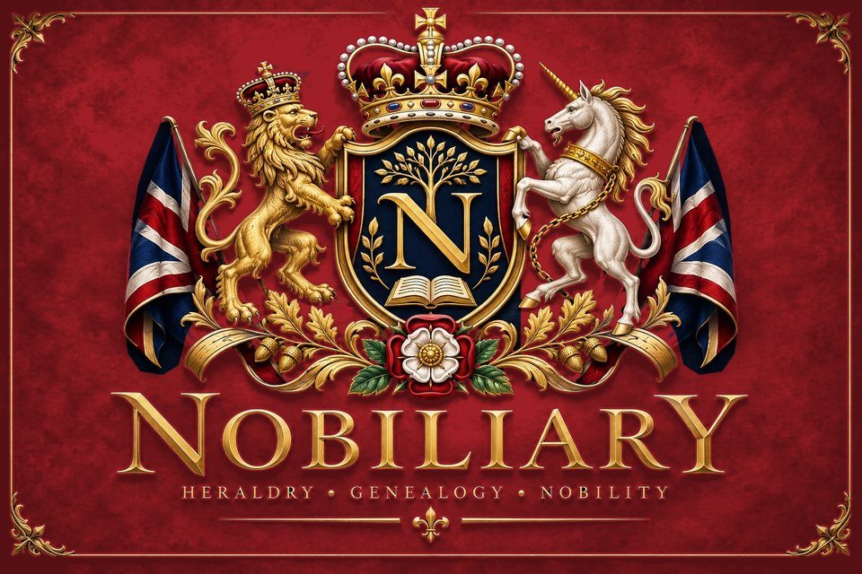
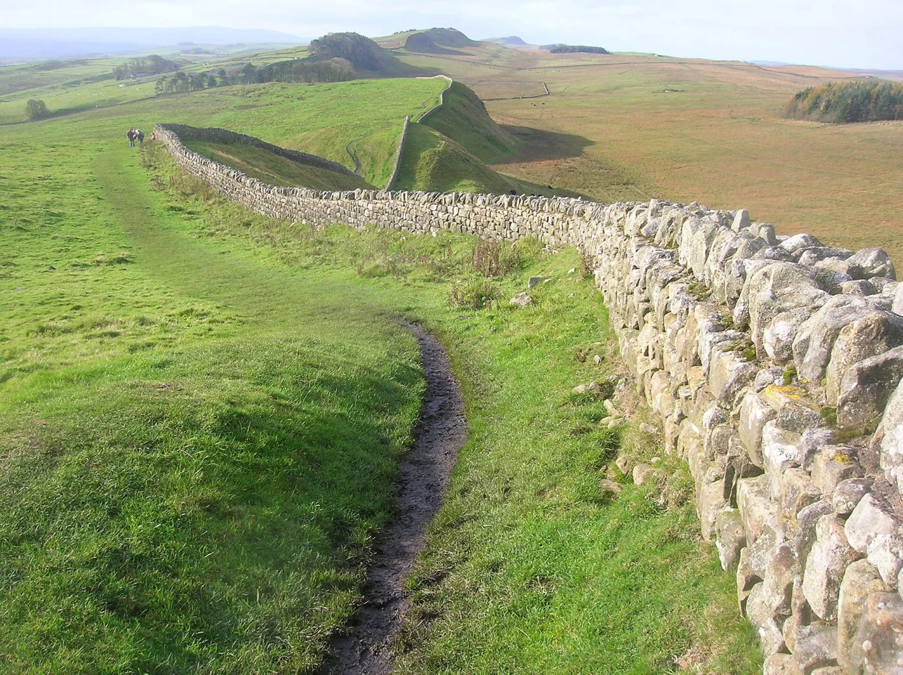
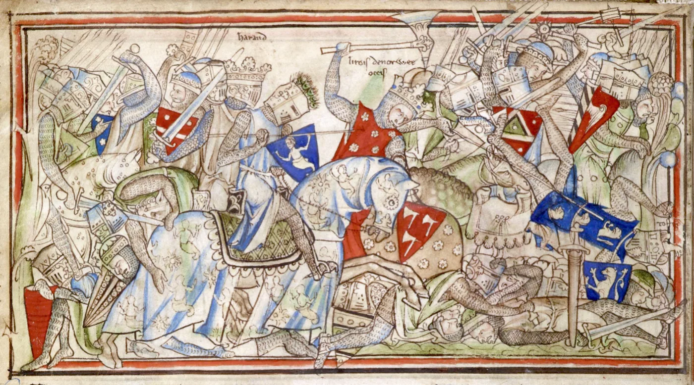
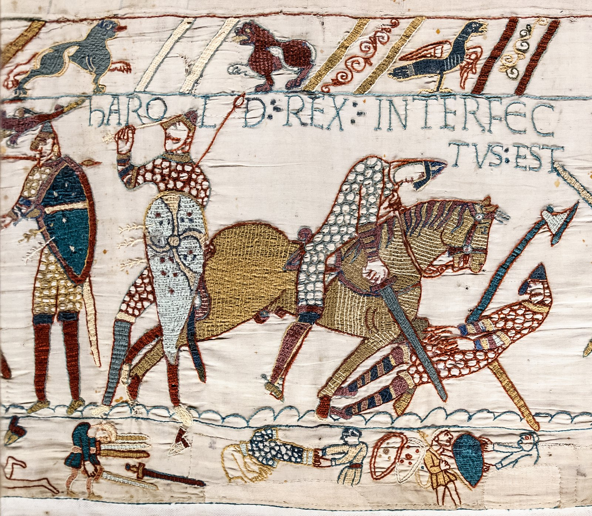
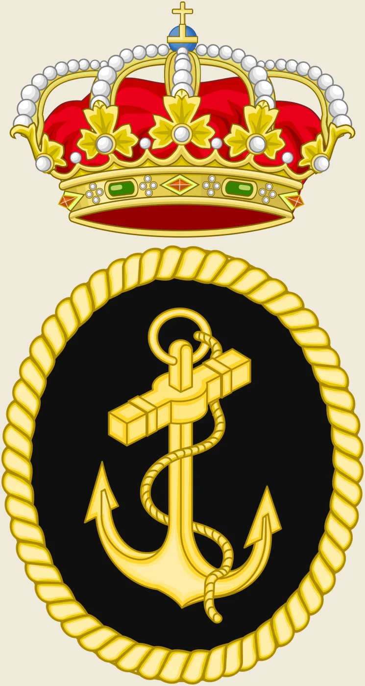
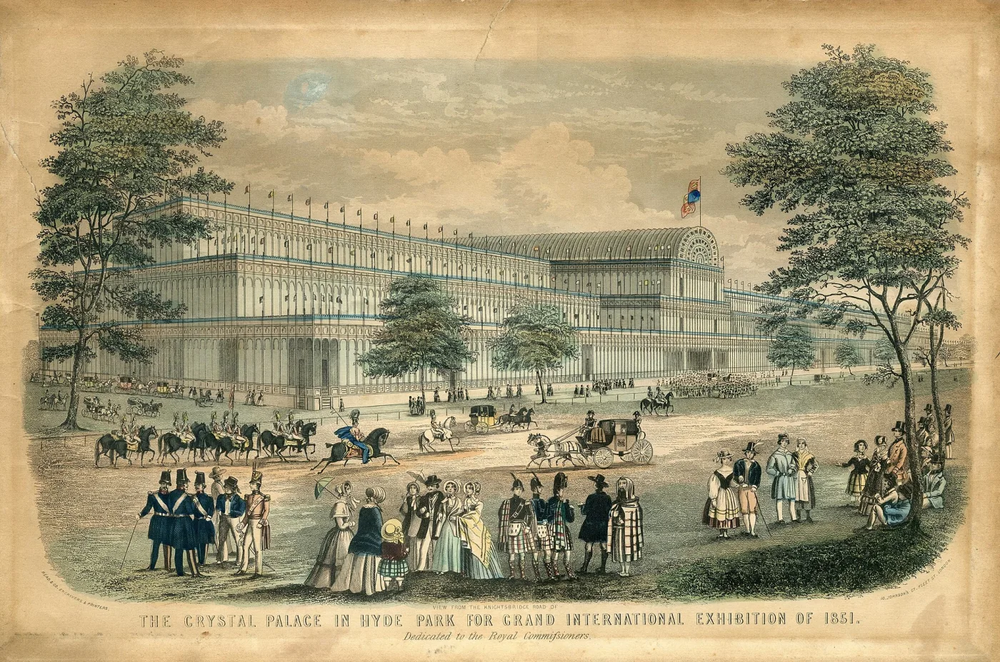
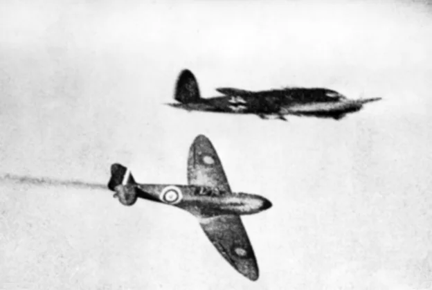

A journey through the ages
History of Great Britain
Britain has been shaped by migration, conquest, union and reinvention. Prehistoric communities left monuments across the landscape before Roman rule connected much of the island to a vast empire.
After Rome withdrew, rival kingdoms emerged. Anglo-Saxon rulers, Viking settlers and Norman conquerors transformed government, language and society, while medieval struggles gradually placed new limits on royal power.
Two world wars, democratic reform, the welfare state and decolonisation reshaped modern life. Immigration, devolution and withdrawal from the European Union continue to redefine the country and its place in the world.

c. 800,000 BCE - AD 43 · 10 events
Prehistoric Britain
Ice ages, migration, farming and monument building shaped Britain long before written history.
Britain’s earliest story stretches across repeated ice ages and changing coastlines. Hunter-gatherers were followed by farming communities that built long barrows, stone circles and settlements. Bronze and iron technologies transformed society, trade and warfare, while regional tribes developed before Rome entered the historical record.

The First Britons
Footprints at Happisburgh and tools at Boxgrove record early humans between the ice ages.
An Island Apart
Hunter-gatherers returned as the ice retreated, and rising seas made Britain an island around 6000 BCE.
Farmers and Monuments
Farming arrived around 4000 BCE, followed by long barrows, henges and stone circles.
Iron Age Tribes
Hillforts, tribal kingdoms and trade with the continent shaped Britain before Rome.
Key events
All 10 →- c. 800,000 BCEEarliest known human presence at HappisburghStone tools and footprints from the Norfolk coast provide some of the earliest evidence for humans in northern Europe.
- c. 4000 BCENeolithic farming spreads into BritainFarming communities introduced domesticated crops and animals, pottery and more permanent settlement patterns.
- c. 3000 BCEStonehenge begins to take shapeCommunities on Salisbury Plain began constructing the monument complex that later became Stonehenge.
- 800 BCEIron Age societies emergeIronworking, hillforts and increasingly complex tribal societies became characteristic across much of Britain.
- 55 BCEJulius Caesar's first expedition to BritainJulius Caesar crossed the Channel with Roman forces but withdrew after a limited campaign in south-eastern Britain.
AD 43 - c. 410 · 26 events
Roman Britain
Rome brought cities, roads, frontiers and imperial government while never conquering all of Britain.
Roman armies conquered much of Britain and incorporated it into an empire stretching across Europe and the Mediterranean. Towns, villas, roads and forts reshaped the landscape, while local cultures adapted unevenly to Roman life. North of Hadrian’s Wall imperial control remained limited, and in the early fifth century Roman government withdrew.

Conquest
Claudius’s legions landed in AD 43 and pushed steadily into Wales and the north.
Resistance
Boudica’s Iceni burned Colchester, London and St Albans before their defeat.
Towns and Roads
Londinium, York and a network of roads tied Britain into the wider empire.
Christianity Arrives
After imperial toleration in 313, British bishops joined the councils of the wider church.
Key events
All 26 →- 43Claudius orders the Roman conquest of BritainEmperor Claudius sent a major invasion force under Aulus Plautius, beginning permanent Roman conquest.
- 60Boudica's revolt beginsBoudica of the Iceni led a large uprising that destroyed Camulodunum, Londinium and Verulamium.
- 122Construction of Hadrian's Wall beginsEmperor Hadrian ordered a fortified frontier across northern England.
- 208Septimius Severus campaigns in CaledoniaEmperor Septimius Severus personally led a large army into northern Scotland.
- 410Roman imperial rule in Britain endsEmperor Honorius told British communities to look to their own defence as Roman administration ceased.
c. 410 - 1066 · 66 events
Kingdoms, Vikings & Unification
Competing kingdoms slowly gave way to a more unified England under pressure from Viking settlement and war.
After Rome, Brittonic and Anglo-Saxon rulers competed across a fragmented island. Christianity spread through missions and royal conversion. Viking raids grew into settlement and conquest, prompting Alfred the Great and his successors to reorganise defence and extend West Saxon power until a unified kingdom of England emerged.

Rival Kingdoms
Wessex, Mercia, Northumbria and the Brittonic kingdoms fought for supremacy.
Conversion
Augustine’s mission and Irish monks from Iona brought Christianity to the English.
The Viking Age
Raids from 793 grew into conquest and settlement across the Danelaw.
One England
Alfred’s heirs reconquered the Danelaw, and Æthelstan’s victory at Brunanburh in 937 secured a united kingdom.
Key events
All 66 →- 597Augustine arrives in KentPope Gregory the Great's missionary Augustine landed in Kent and began converting the court of King Æthelberht.
- 793Vikings raid LindisfarneScandinavian raiders attacked the monastery of Lindisfarne, shocking Christian Europe.
- 878Battle of EdingtonAlfred defeated Guthrum's Viking army after a winter crisis in Wessex.
- 937Battle of BrunanburhÆthelstan defeated a coalition of Vikings, Scots and Strathclyde Britons.
- 1016Cnut becomes king of EnglandAfter Edmund's death, Cnut became sole king and later ruled a wider North Sea empire.
1066 - 1485 · 106 events
Norman & Medieval Britain
Norman rule transformed England, while conflict and crisis gradually reshaped monarchy and Parliament.
The Norman Conquest replaced England’s ruling elite and tied the kingdom more closely to continental Europe. Under the Plantagenets, royal justice and Parliament expanded even as kings faced baronial rebellion and war. Conflict with Wales, Scotland and France, the Black Death and the Wars of the Roses transformed politics and society.

Norman Conquest
Castles, the Domesday survey and a new French-speaking elite remade England.
Crown and Barons
Magna Carta and the rise of Parliament placed lasting limits on royal power.
Wars Across Britain
Edward I conquered Wales, while Scotland won its independence at Bannockburn.
Plague and Revolt
The Black Death killed perhaps half the population and fuelled the Peasants’ Revolt.
Key events
All 106 →- 1066Battle of HastingsWilliam defeated and killed Harold II in a day-long battle in Sussex.
- 1086Domesday Book is completedThe main Domesday survey was written up and presented to the king.
- 1215Magna Carta is sealed at RunnymedeKing John accepted a charter of liberties under pressure from rebel barons.
- 1348Black Death reaches BritainPlague spread rapidly through England, Wales and Scotland, killing a very large share of the population.
- 1461Battle of TowtonEdward of York won a huge and bloody battle against Lancastrian forces.
1485 - 1603 · 53 events
Tudor Britain
The Tudors ended the dynastic wars and transformed religion, government and England’s place in the world.
Tudor monarchs strengthened central government and broke England’s church from papal authority. Religious change brought upheaval under Henry VIII, Edward VI, Mary I and Elizabeth I. Printing, commerce, theatre and overseas voyages flourished, while England’s rivalry with Catholic Spain culminated in the Armada campaign.

A New Dynasty
Henry VII won the crown at Bosworth and joined York and Lancaster by marriage.
Break with Rome
Henry VIII’s Act of Supremacy made the monarch head of the English church.
Religious Upheaval
Monasteries were dissolved, the north rose in protest, and Protestants and Catholics were persecuted in turn.
Elizabethan England
Elizabeth I’s long reign brought a religious settlement, voyages and theatre.
Key events
All 53 →- 1485Battle of Bosworth FieldHenry Tudor defeated and killed Richard III.
- 1534Act of SupremacyParliament recognized Henry VIII as Supreme Head of the Church of England.
- 1553Lady Jane Grey is proclaimed queenEdward VI's succession plan attempted to exclude his Catholic half-sister Mary.
- 1587Mary, Queen of Scots, is executedMary was beheaded after evidence linked her to the Babington Plot.
- 1588Spanish Armada failsPhilip II's invasion fleet was defeated by English naval action, weather and logistical problems.
1603 - 1837 · 113 events
Stuarts, Revolution & Union
Conflict over crown, Parliament and religion ended in revolution and a new constitutional order.
Stuart ambitions collided with Parliament, producing civil wars, the execution of Charles I and a republican interregnum. Monarchy returned in 1660, but the Glorious Revolution secured parliamentary limits on royal power. The 1707 union created Great Britain, while Hanoverian rule saw cabinet government and empire expand.

Civil Wars
Crown and Parliament fought across England, Scotland and Ireland from 1642.
Glorious Revolution
William and Mary took the throne, and the Bill of Rights limited the crown.
Jacobite Risings
Stuart claimants rose in 1715 and 1745 until defeat at Culloden ended their cause.
Global Power
Victory over Napoleon at Trafalgar and Waterloo left Britain the leading world power.
Key events
All 113 →- 1603Union of the CrownsJames VI of Scotland inherited the English and Irish crowns as James I.
- 1642English Civil War beginsCharles raised his standard at Nottingham and both sides mobilized armies.
- 1649Commonwealth of England is declaredThe monarchy and House of Lords were abolished and England became a republic.
- 1689Bill of RightsParliament set out limits on royal authority and protections for parliamentary privilege.
- 1707Acts of Union create Great BritainEngland and Scotland united into the Kingdom of Great Britain with one Parliament at Westminster.
1837 - 1901 · 43 events
Victorian Britain
Industrial power and imperial reach grew alongside rapid social change and demands for political reform.
Britain became the world’s leading industrial and commercial power, linked by railways, steamships and telegraph cables. Cities expanded at extraordinary speed, bringing wealth as well as poverty and dangerous working conditions. Reform movements widened political participation, while imperial expansion imposed British power across much of the globe.

Workshop of the World
Railways, factories and the first underground railway transformed daily life.
Reform and the Vote
Chartists and successive Reform Acts pushed the franchise steadily wider.
Empire
British rule spread across India, Africa and beyond; Victoria became Empress of India.
Famine and Hardship
The Irish famine and crowded industrial cities exposed the human cost of change.
Key events
All 43 →- 1837Victoria becomes queenEighteen-year-old Victoria succeeded William IV.
- 1838People's Charter launches ChartismThe People's Charter demanded six political reforms including universal male suffrage and secret voting.
- 1851Great Exhibition opens in Hyde ParkThe Crystal Palace displayed industrial products and art from Britain and around the world.
- 1867Second Reform ActParliament greatly expanded the urban male electorate.
- 1876Victoria is proclaimed Empress of IndiaParliament authorized a new imperial title promoted by Disraeli.
1901 - Present · 109 events
Modern Britain
Two world wars and the end of empire remade Britain into a diverse modern democracy and welfare state.
The world wars mobilised society on an unprecedented scale and accelerated political and social change. Britain built a welfare state after 1945 while its empire gave way to independent nations and a new Commonwealth. Immigration reshaped British culture, devolution changed the union, and the 2016 referendum led to withdrawal from the European Union.

The Great War
Britain mobilised millions for the First World War, with huge losses on the Somme.
Votes for Women
Suffragettes campaigned for the vote until equal voting rights finally arrived in 1928.
Welfare State
The postwar Labour government founded the NHS and a cradle-to-grave welfare system.
A Changing Union
Decolonisation, immigration, devolution and Brexit reshaped modern Britain.
Key events
All 109 →- 1914Britain enters the First World WarBritain declared war on Germany after the invasion of neutral Belgium.
- 1928Equal Franchise ActWomen gained the parliamentary vote on the same terms as men at age twenty-one.
- 1940Dunkirk evacuationHundreds of thousands of Allied troops were evacuated from northern France under Operation Dynamo.
- 1948National Health Service beginsThe NHS opened under Health Minister Aneurin Bevan, providing medical care largely free at the point of use.
- 2020United Kingdom leaves the European UnionThe Withdrawal Agreement entered into force and the UK formally ceased to be an EU member state.